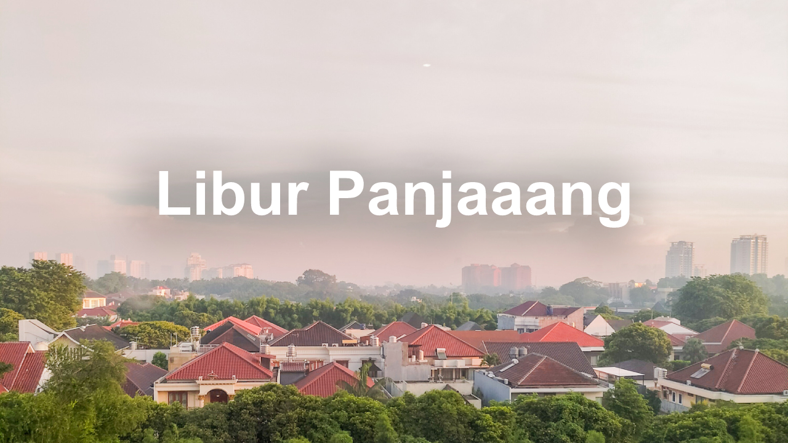

Akhirnya Punya Banyak Waktu Untuk Mikirin Masa Depan
27 Mei 2023
By Wicaksono Hanif Supriyanto
Setelah menempuh 6 Semester di SMA, kini masa yang gue ditunggu-tunggu akhirnya tiba, yaitu libur kelulusan. Libur ini merupakan libur terpanjang yang gue rasakan sejak pandemi COVID-19 3 tahun silam. Waktu luang yang dulu bagaikan oase di padang pasir, kini berhamburan dimana-mana. Setiap hari adalah hari libur dan tanggal merah.
Disaat liburan seperti ini. sebagian orang ada yang udah merasa lega karena telah mendapatkan apa yang mereka tuju, tapi sebagian lagi harus menunggu. Yap, gue termasuk orang yang masih menunggu. Gue belum sepenuhnya tenang di liburan ini. Ada satu hal yang mengganjal karena belum gue dapatkan.
Sebenarnya apa sih yang gue tunggu? Untuk tau jawabannya, silakan baca artikel ke-8 gue yang judulnya “Failed Expectations” yang gue publish tanggal 17 April lalu. Baca dulu artikelnya supaya ceritanya nyambung dengan artikel ini. Kalian bisa buka menu di pojok kiri atas, pilih “Article”, kemudian akan muncul list artikel yang udah pernah gue tulis. Nah, kalo udah, kalian bisa lanjut baca artikel ini.
Terlepas dari semua hal yang masih gue tunggu tersebut, gue mikir, kalo cuma nunggu dan ga ngapa-ngapain di waktu luang seperti ini pasti rugi banget. Akhirnya, waktu luang yang banyak ini gue gunakan untuk melakukan semua hal yang belum sempat gue lakukan selagi sekolah waktu itu.
Salah satu yang gue garap ketika awal-awal liburan adalah belajar bahasa pemrograman baru. Karena tujuan kuliah gue adalah jurusan IT, makanya banyak teknologi baru yang harus dipelajari dari awal. Selain itu tujuannya supaya website ini bisa lebih berkembang dengan fitur yang lebih beragam. Untuk kebutuhan website development ini, bahasa yang gue pelajari adalah JavaScript. Alasan gue mempelajari JavaScript dari awal adalah untuk membekali pengetahuan gue tentang dasar dari bahasa ini, yang nantinya akan memudahkan gue ketika mempelajari framework JavaScript lainnya.
Selain itu juga ada beberapa hal terbengkalai yang sekarang mulai gue urusin lagi. Salah satunya adalah Youtube Channel. Beberapa bulan kebelakang ini channel gue kayak mati suri, jarang ada video baru. Akhirnya sekarang gue bisa nyempetin waktu untuk bikin video lagi. Kalo boleh dibilang, channel gue ini agak terlalu segmented, jadi views-nya ga banyak. Sebenarnya ini cuma masalah publisitas dan saat ini gue masih mikirin cara untuk mempromosikan video-video tersebut. Oiya, jangan lupa mampir ke Channel gue. Kalian bisa klik menu di pojok kiri atas, terus pilih “Video”, atau bisa juga akses melalui menu “Home”, terus tinggal scroll ke bawah.
Belakangan ini gue juga mulai ngulik software produktivitas baru yang gue temuin. Contohnya aplikasi editing foto dan video yang lumayan profesional untuk komputer. Dari pengamatan gue, kini aplikasi-aplikasi penunjang kreativitas dan produktivitas tersebut makin banyak yang open source, alias gratis dan gak kayak dulu lagi, yang apa-apa serba berlangganan. Kalian juga bisa cek project-project yang udah gue bikin di halaman “Project” yang ada di website ini.
Belum lama ini gue juga mulai main-main alat musik, terutama keyboard. Gak sengaja nemu keyboard jadul di gudang, coba gw utak-atik dikit, ternyata masih berfungsi normal. Udah beberapa lagu gue pelajari, mulai dari yang chordnya sederhana sampai yang belibet. Sejauh ini gue mengakui kalo kemampuan gue main keyboard masih sangat amat jauh dari kata bagus. Lagi pula gue belajar keyboard ini juga otodidak, murni untuk stress release dan ngisi waktu. Kalo ada yang tertarik nge-hire gue jadi keyboardist, boleh banget ya, hehe…. DM aja!
Sisa waktu luang yang gue punya biasanya gue pake untuk research. Kalo tiba-tiba kepikiran tentang suatu hal yang bikin penasaran, biasanya gue langsung cari tau lewat berbagai sumber. Riset ini bermanfaat banget untuk ngisi waktu luang sekaligus nambah pengetahuan.
Bicara soal pengetahuan, gue juga belum bisa sepenuhnya ninggalin pelajaran SMA karena masih ada beberapa tes perguruan tinggi yang mengharuskan gue untuk memahami seluruh pelajaran SMA lagi. Yap, ini semua karena takdir 28 Maret itu. Tapi gak nyesel juga sih untuk nge-rewind semua pelajaran SMA, ternyata jadi semakin paham, padahal dulu pas diterangin guru gak paham-paham amat.
Supaya gak terlalu suntuk, tiap weekend biasanya gue sempetin untuk hangout sama siapa aja, tentunya yang deket-deket rumah, karena sejujurnya gue agak males pergi jauh-jauh kalo cuma buat nongkrong doang. Bepergian tiap weekend ini jadi penyeimbang hari-hari gue, komposisi seimbang antara produktivitas dan refreshing.
Sebenernya liburan kelulusan ini masih panjang. Ada banyak cerita untuk esok hari. Bukan hal yang bijak apabila gue membiarkan hari berlalu dengan sia-sia. Sebenernya gak ada waktu untuk gabut, setiap detik, menit, jam dan hari adalah sebuah kesempatan berharga.
Itu aja yang bisa gue ceritain, semoga artikel ini bisa ngisi waktu luang kalian dan tentunya menginspirasi. Kalo kalian udah selesai baca artikel ini, jangan lupa kasih tau tanggapan kalian lewat DM IG gue. Sampai jumpa di Catatan Mingguan Hanif episode berikutnya!